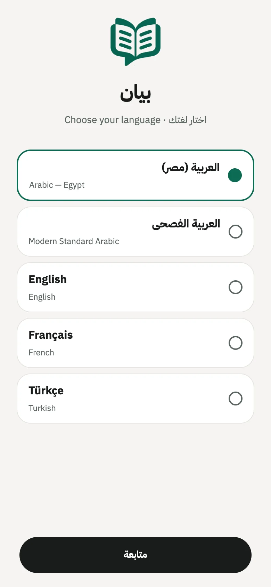
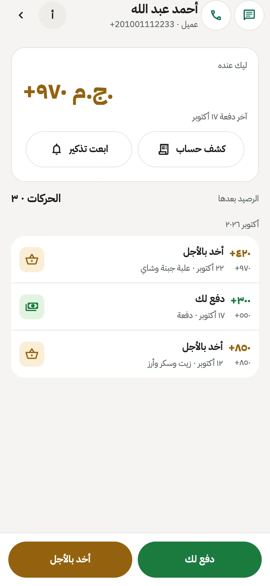
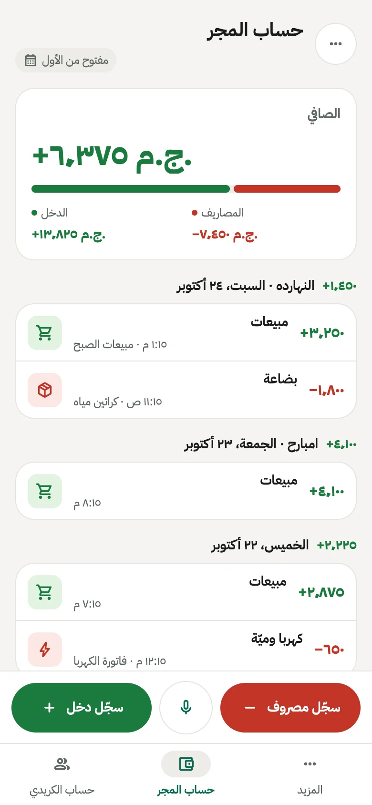
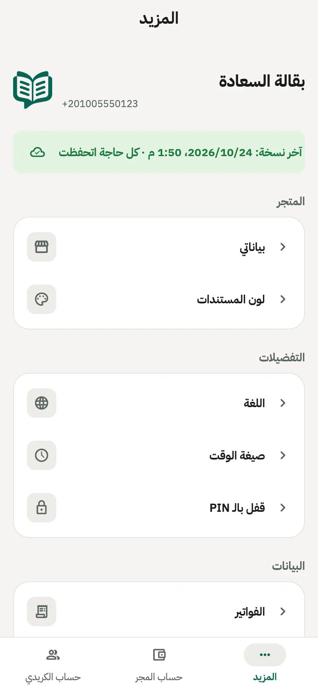

You say what happened, in your own words. Bayan writes the shop ledger after you confirm.
For small shops in Egypt, on Android and iOS, and it works offline.


The notebook stays on the counter.
Credit is a name and a number in a paper notebook. It does not remind anyone, it does not total the page, and it does not leave with you. If the book stays at the shop, the balance stays at the shop.
Bayan keeps the habit and leaves the paper. You tell it what happened. It drafts the entry. Nothing is saved until you confirm the person and the amount.
You can see who owes you, and whom you owe.
Each customer and each supplier has a running balance. You add or edit a transaction, and you can attach a photo.
You share a statement as a PDF, an image, or text, and you can send it on WhatsApp. You can send a WhatsApp payment reminder now, or schedule one.

Money in and money out share one cashbook.
You record money in and money out with categories, on a keypad with a calculator. You attach a receipt photo and issue a receipt that carries the store name and logo.
Reports export to PDF or text. When you close a period, Bayan keeps it in an archive.

You speak. Bayan drafts. You decide what is saved.
Speak, or photograph an invoice, in Egyptian Arabic. Bayan drafts the invoice or the cashbook entry.
You confirm the contact and the entry before anything is saved. The free tier includes 20 assistant requests a month.
An example of what you can say. Not a saved entry.
بضاعة لمحمد بخمسمائة جنيه
Bayan drafts a credit entry for Mohamed, 500 EGP, and waits. You choose the contact and confirm. Until then, nothing is saved.

The entry is saved on the phone before it reaches the network.
-
On the phone first
Every entry is saved on the device before any network.
-
Then it syncs
When there is a connection, Bayan syncs. When there is not, you keep working.
-
You can see the backup
Each area shows its own backup status.
Sign-in is a phone number. The lock is a PIN.
- Sign-in
- A phone number, then a one-time code.
- App lock
- You can require a PIN to open Bayan.
- Receipts
- The store name and logo appear on receipts.
- Language
- Arabic is the default. English, French, and Turkish are included.
- Time
- 12-hour or 24-hour.
- Money
- Amounts are stored exactly, with no rounding errors. The currency is set per store. EGP is the default.

From the first screen to settings.
Language, the ledger, a contact, the cashbook, the assistant, and settings.
-
Language -
Credit ledger -
Contact -
Cashbook -
Assistant -
Settings
Bayan is built by Qcore.
Bayan is our app for small merchants in Egypt. The same team builds custom mobile apps for field work, warehouses, attendance, and approvals, on the operation you already run.
If you need an app of your own, start with a conversation.
Early access starts with a message.
Bayan is not on the public app stores yet. Contact us for early access.